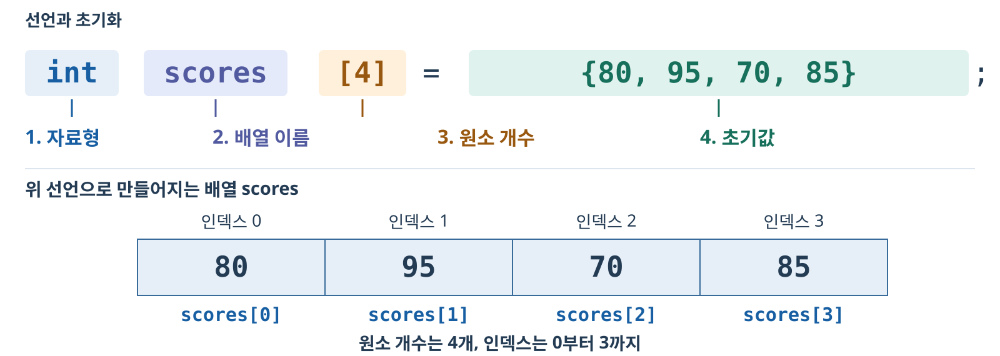
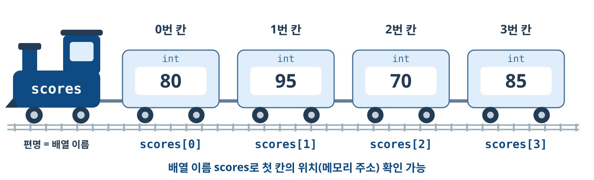
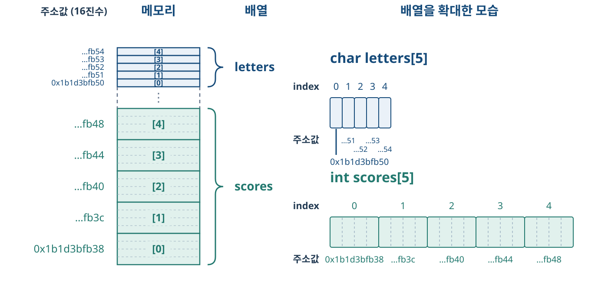
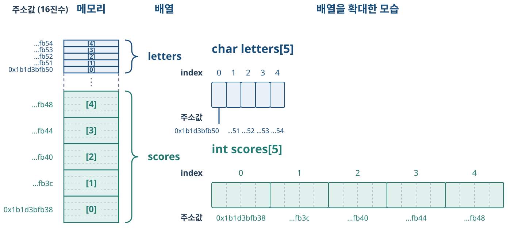
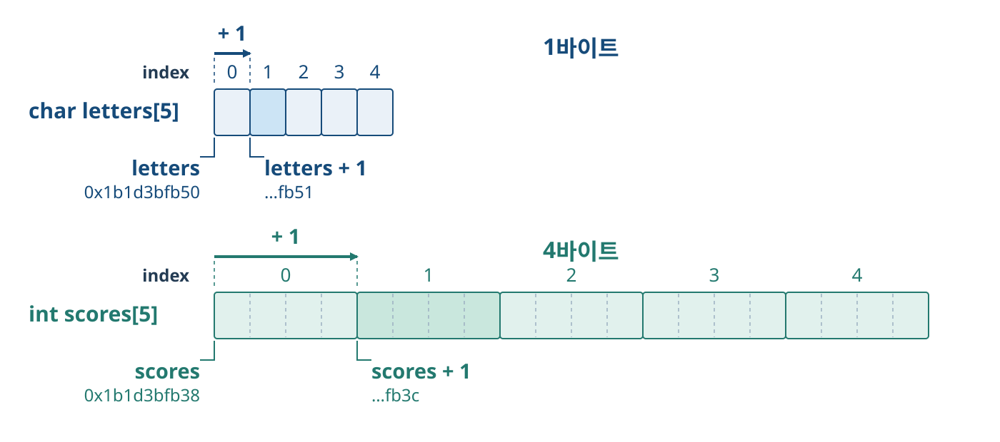
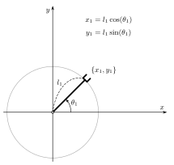
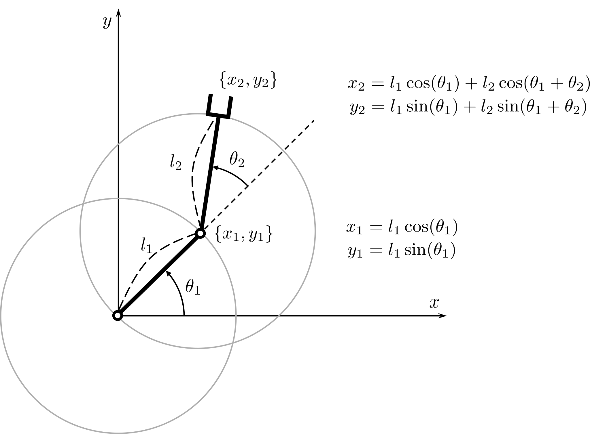

01. 배열 기초 복습과 크기
같은 자료형의 여러 값을 연속된 메모리 공간에 저장
자료형에 따른 공간 크기, 원소의 주소, 2차원 배열과 로봇 팔의 속도 계산
같은 자료형의 여러 값을 연속된 메모리 공간에 저장



sizeof는 자료형이나 변수가 차지하는 바이트 수를 구하는 연산자.sizeof(char): 자료형의 크기. sizeof(letters): 배열 전체의 크기.printf에서 크기용 서식 %zu로 출력.char size: 1
int size: 4
letters size: 5
scores size: 20
실행 결과가 여기에 표시됩니다.
선언만 하기 · 선언하며 초기화하기 · 원소에 값 대입하기
int a[5]; // 초기화 없이 선언
int b[5] = {10, 20, 30, 40, 50}; // 선언과 동시에 초기화
int c[] = {10, 20, 30, 40, 50}; // 초기값 개수로 길이 결정
int d[5] = {10, 20}; // 나머지 원소는 0
int e[5] = {0}; // 모든 원소를 0으로 초기화
a[0] = 10; // 선언 후 원소별 대입
a[1] = 20;
{...}로 초기값 지정 가능. 선언 후에는 a[i] = 값;으로 대입.{0}: 첫 원소가 0이고 생략한 나머지도 0이므로 모든 원소가 0.a에서 아직 값을 대입하지 않은 원소는 읽기 금지.10, 20, 30을 순서대로 담은 배열 values 선언.10 20 30 출력.실행 결과가 여기에 표시됩니다.
정정 전: 80 95 70 85
정정 후: 80 95 75 85
실행 결과가 여기에 표시됩니다.
변수 하나의 위치 확인 · 배열의 연속 배치 · 자료형 크기에 따른 주소 이동

&: 변수나 배열 원소의 시작 주소를 구하는 연산자.int score = 80;
printf("주소: 0x%llx\n",
(unsigned long long)&score);
| 표현 | 역할 |
|---|---|
score |
변수에 저장된 값 80 |
&score |
score가 저장된 시작 주소 |
(unsigned long long) |
주소를 출력용 정수로 변환 |
0x%llx |
0x를 붙이고 변환한 정수를 16진수로 출력 |
실행 결과가 여기에 표시됩니다.

| C 표현식 | 같은 위치를 나타내는 표현 | 이동한 바이트 수 |
|---|---|---|
letters + 1 |
&letters[1] |
1 × sizeof(char) = 1 |
scores + 1 |
&scores[1] |
1 × sizeof(int) = 4 |
scores + 2 |
&scores[2] |
2 × sizeof(int) = 8 |
+ 1은 자료형의 크기에 맞춰 원소 하나만큼 이동함.sizeof(int)로 확인.실행 결과가 여기에 표시됩니다.
행·열로 원소를 구분하는 배열
A=147102581136912∈R4×3
[a11a21a12a22]+[b11b21b12b22]=[a11+b11a21+b21a12+b12a22+b22]
[1324]+[5768]=[610812]
| 1 | 2 |
| 3 | 4 |
| 5 | 6 |
| 7 | 8 |
| 19 | □ |
| □ | □ |
1행(row) × 1열(column) → c11
| 1 | 2 |
| 3 | 4 |
| 5 | 6 |
| 7 | 8 |
| 19 | 22 |
| □ | □ |
1행(row) × 2열(column) → c12
| 1 | 2 |
| 3 | 4 |
| 5 | 6 |
| 7 | 8 |
| 19 | 22 |
| 43 | □ |
2행(row) × 1열(column) → c21
| 1 | 2 |
| 3 | 4 |
| 5 | 6 |
| 7 | 8 |
| 19 | 22 |
| 43 | 50 |
2행(row) × 2열(column) → c22
A=[acbd]⟹det(A)=ad−bc
det[1324]=1⋅4−2⋅3=4−6=−2
A=[acbd]⟹A−1=ad−bc1[d−c−ba](detA=0)
A=[1324]⟹A−1=−21[4−3−21]=[−2231−21]
AA−1=A−1A=I=[1001]
int array[4][3];
| 부분 | 의미 |
|---|---|
int |
각 원소에 저장할 값의 자료형 |
[4] |
행 4개, 행 인덱스 0~3 |
[3] |
각 행의 원소 3개, 열 인덱스 0~2 |
A=147102581136912∈R4×3
int A[4][3] = {
{1, 2, 3},
{4, 5, 6},
{7, 8, 9},
{10, 11, 12}
};
A=[ACBD]
char A[2][2] = {
{'A', 'B'},
{'C', 'D'}
};
A=1.12.13.11.22.23.21.32.33.31.42.43.4∈R3×4
float A[3][4] = {
{1.1f, 1.2f, 1.3f, 1.4f},
{2.1f, 2.2f, 2.3f, 2.4f},
{3.1f, 3.2f, 3.3f, 3.4f}
};
0123100110120147102581136912⟶01231001101201471025801136912
int array[4][3] = {
{1, 2, 3},
{4, 5, 6},
{7, 8, 9},
{10, 11, 12}
};
array[2][1] = 80; // 8을 80으로 변경
0123012000000000000⟶0123011020000008000000
int array[4][3] = {0};
array[2][1] = 80;
{0}: 모든 원소를 0으로 초기화.147102581136912
i: 행 인덱스 0~3. j: 열 인덱스 0~2.int array[4][3];
int value = 1;
for (int i = 0; i < 4; i++) {
for (int j = 0; j < 3; j++) {
array[i][j] = value;
value++;
}
}
147102581136912
실행 결과가 여기에 표시됩니다.
A=123246369
i, j: 행·열 인덱스 0~2.실행 결과가 여기에 표시됩니다.
A=[1324],B=[5768]
C=AB=[19432250]
i: A의 행. j: B의 열.k: A의 열 번호와 B의 행 번호.실행 결과가 여기에 표시됩니다.
int k, m, a[4][4] = {0};
for (k = 0; k <= 3; k++) a[k][0] = 1;
for (k = 1; k <= 3; k++) {
for (m = 1; m <= k; m++)
a[k][m] = a[k - 1][m - 1] + a[k - 1][m];
}
for (k = 0; k <= 3; k++) {
for (m = 0; m <= 3; m++)
printf(" %d", a[k][m]);
printf("\n");
}
A=□□□□□□□□□□□□□□□□
A=1111012300130001
int array1[][3] = {{1, 2, 3}, {4, 5, 6}};
int array2[2][3] = {{1, 2, 3}, {4, 5, 6}};
array1[i][j] = 값;으로 원소별 대입. array1 = array2;와 같은 배열 전체 대입은 불가.a, b가 모두 2행 3열 배열이 되도록 두 선언 수정.a의 초기값 유지. 수정 후 실행 결과는 1.실행 결과가 여기에 표시됩니다.
int array[2][3] = {{1, 2, 3}, {4, 5, 6}};
| 구분 | 사용 가능한 인덱스 |
|---|---|
| 행 | 0~1 |
| 열 | 0~2 |
array[2][0] = 7; // 행 범위 초과
array[0][3] = 7; // 열 범위 초과
행렬로 관절속도를 계산하고 로봇 팔 움직이기


xy=L1cosθ1+L2cos(θ1+θ2)=L1sinθ1+L2sin(θ1+θ2)↓⏐dtdx˙y˙=−L1sinθ1θ˙1−L2sin(θ1+θ2)θ˙1−L2sin(θ1+θ2)θ˙2=L1cosθ1θ˙1+L2cos(θ1+θ2)θ˙1+L2cos(θ1+θ2)θ˙2↓⏐x˙[x˙y˙]=J(θ)[−L1sinθ1−L2sin(θ1+θ2)L1cosθ1+L2cos(θ1+θ2)−L2sin(θ1+θ2)L2cos(θ1+θ2)]θ˙[θ˙1θ˙2]
J(θ)[−1.500−0.866−1.000−0.000]θ˙(rad/s)[−0.000−0.000]=x˙(m/s)[−0.000−0.000]
주석 빈칸 작성 후 재생.
θ˙[θ˙1θ˙2]=J−1(θ)L1L2sinθ21[L2cos(θ1+θ2)−L1cosθ1−L2cos(θ1+θ2)L2sin(θ1+θ2)−L1sinθ1−L2sin(θ1+θ2)]x˙[x˙y˙]
θ˙(rad/s)[−0.000−0.000]=J−1(θ)[−0.000−1.000−1.000−1.000]x˙(m/s)[−0.000−0.000]
주석 빈칸 작성 후 재생.
| 개념 | 핵심 내용 |
|---|---|
| 배열 선언·초기화 | 같은 자료형의 값을 연속 저장. {...}로 초기화, {0}은 전체 0. 이후 a[i] = 값;으로 대입 |
| 배열의 크기 | sizeof(배열) = 원소 하나의 크기 × 전체 원소 개수 |
| 주소와 이동 | &a[i]: 원소의 주소. a + 1: 원소 하나의 크기만큼 주소 이동 |
| 2차원 배열 | a[행][열]로 선언. 한 행의 원소부터 메모리에 연속 배치 |
| 인덱스·반복 | 인덱스는 0부터 각 차원의 크기 − 1까지. 중첩 for문으로 순회 |
| 행렬 연산 | 덧셈은 같은 위치끼리. 곱셈은 왼쪽 행과 오른쪽 열의 곱을 누적 |